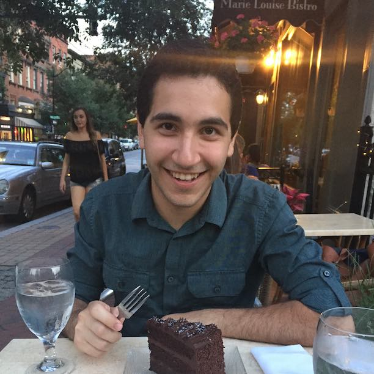
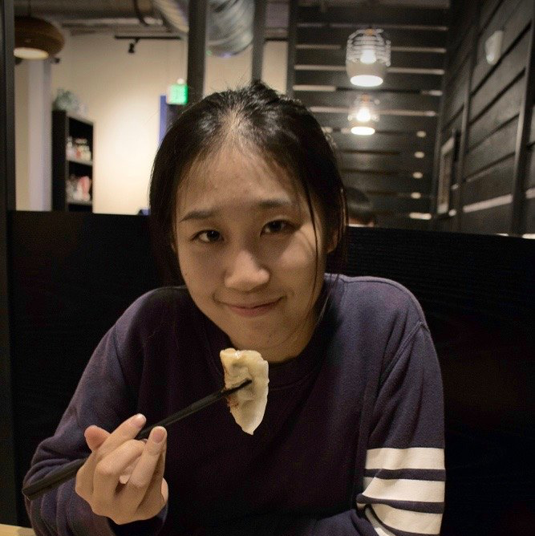
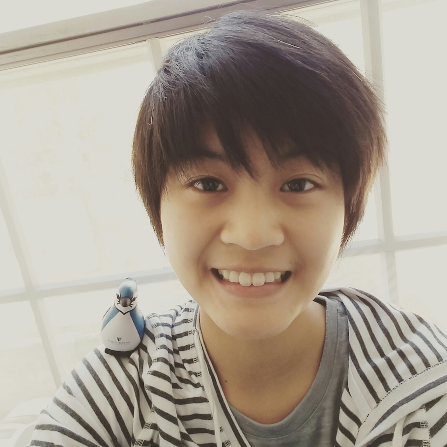

Our Team
Ocho Tech started as a vision in five Johns Hopkins students - a vision to disrupt medicine.
Graeme Steller
Graeme Steller is a senior BME and the founder of Ocho. He competes in international yo-yo competitions and serves crab cakes on his friend’s food truck. His favorite musical artist is Justin Bieber and is proud to admit it.
Graeme Steller
Graeme Steller is a senior BME and the founder of Ocho. He competes in international yo-yo competitions and serves crab cakes on his friend’s food truck. His favorite musical artist is Justin Bieber and is proud to admit it.

Victor Dadfar
Victor Dadfar is a junior BME and Lead Software Developer at Ocho. He has a strong passion for Star Wars, bossing Graeme around, and formal attire, in no particular order. He is a cult follower of Ariana Grande.
Saki Fujita
Saki Fujita is a junior BME who works on Ocho’s Research and Insights team. She is a Japanese national Go champion and has been playing the game competitively for most of her life. Saki’s favorite music is whatever’s on the top hits!

Wendy Huang
Wendy Huang is a junior BME who works on Ocho’s Research and Insights team. She is a world traveler, having visited 11 countries in her lifetime! Wendy is an avid Tiesto fan.
Daniel Sohn
Daniel Sohn is a junior BME who works on Ocho’s App Development team. He is Ocho’s most inquisitive member and can speak Spanish, Korean, and English fluently! A man of the classics, Daniel enjoys listening to Mozart.

Isaree Pitaktong
We're on the lookout for the best and brightest to join our team. Check back soon to see the newest members of Ocho Tech.
Richard Guo
We're on the lookout for the best and brightest to join our team. Check back soon to see the newest members of Ocho Tech.
Sindhu Banerjee
We're on the lookout for the best and brightest to join our team. Check back soon to see the newest members of Ocho Tech.
Dr. Hien Nguyen
Dr. Nguyen is a highly respected general surgeon at Johns Hopkins Hospital and is the clinical sponsor of Ocho. He serves as the director of the Comprehensive Hernia Center. Dr. Nguyen is also a world renowned story teller.
Background
In most clinical settings, physicians often rely on the patient's self-report when assessing medication adherance. However, patients forget and tend to overreport, giving physicians a skewed understanding of their actual adherance levels.
So, we did some research...
After conducting thorough literary review and user studies, we focused on medication adherance with Coronary Artery Disease (CAD) patients. Of those patients:
Our results show that more likely than not, Coronary Artery Disease patients are not telling the truth about their medication adherance.
Thus, we believe that physicians need a way to verify that CAD patients are taking their medications as prescribed.
If you want to learn more, contact us.
If you think you can help disrupt, we're listening.